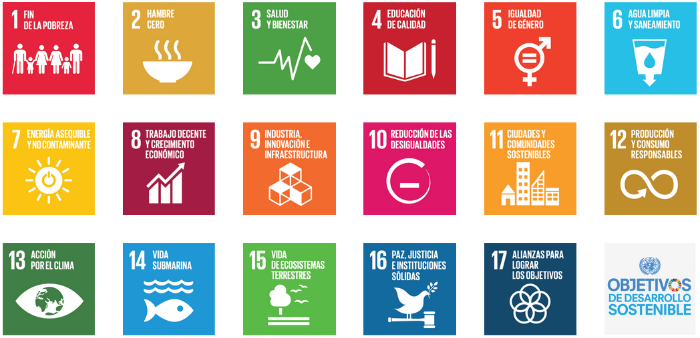

Temporalización
La sesión nº 3 se desarrollará el miércoles 29 de abril.
La sesión nº 3 se desarrollará el miércoles 29 de abril.
En pequeños grupos de 3-4 alumnos/as deben recopilar toda la información que han encontrado en la sesión 2 para decidir cómo organizar su presentación/infografía. Para ello podrán emplear Canva o PowerPoint. Esta sesión se desarrolla en el aula de informática. Deberán trabajar aspectos culturales de su ciudad y estrategias de sostenibilidad.
Algunos ejemplos para guiarse en su trabajo:

Obra publicada con Licencia Creative Commons Reconocimiento Compartir igual 4.0